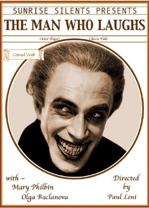
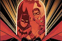
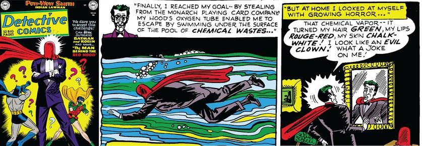
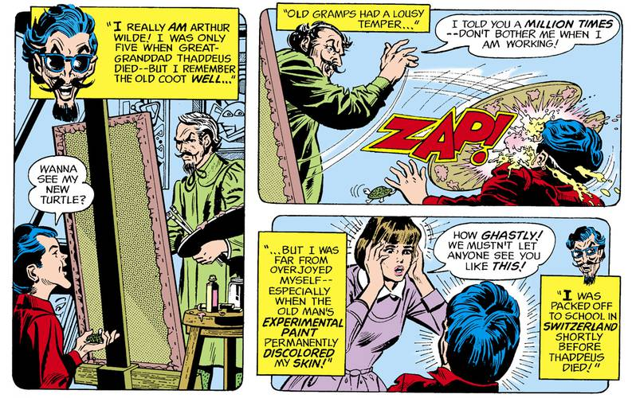
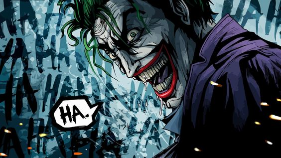
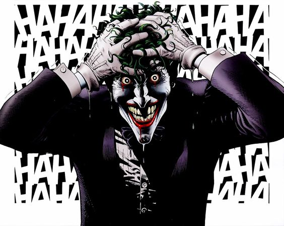

| Nome | Surgimento | Origem | Aparecimento |
|---|---|---|---|
| O HOMEM QUE RI | 1928 | Eua | Inglaterra |
| CAPUZ VERMELHO | 1951 | Eua | Gotham City |
| VÍTIMA DE SEU BISAVÔ | 1975 | Eua | Gotham City |
| A PIADA MORTAL | 1988 | Eua | Gotham City |
Apesar do diretor Todd Phillips ter confirmado que o Coringa não segue as Hq's, a sua produção continua a mostrar origens do palhaço do crime, Coringa nao ter uma historia oficial definida em meio a anos de existencia, O maior inimigo do Batman ja ganhou varias Historias atravez dos filmes e quadrinhos, cinemas e animaçoes, confira um pouco de suas versões.
O coringa surgiu na primeira edição de sua Hq como um homem vestido de palhaço que matava suas vitimas com um soro, que matava suas vitimas e deixar com um macabro sorriso. Sua aparencia foi baseado do filme "O HOMEM QUE RI"(Filme de romance do Victor Hugo), a produçao trouxe um ator que no filme após trair a corte inglesa foi obrigado a passar por procedimentos cirurgicos em sua face em que a partir dai ele ficou com um sorriso forçado, para sempre em sua face. Isso deixou um visual aterrorizante no personagem que foi grande espiraçao para os quadrinistas Bill Finger, Bob Kane e Jerry Robinson.
Mais de uma decada apos surgir nas Hqs, Coringa ganhou sua primeira origem na historia; O Homem do Capuz Vermelho, de 1951, Na Historia, o Batman é convidado para dar aulas de criminologia em uma faculdade e passa para seus alunos um caso que ele mesmo não conseguiu resolver, Batman que estava perseguindo a tempos um homem que neste dia estava roubando uma fabrica de baralhos, O homem de capuz vermelho cai em um tunel de diversos produtos quimicos e desaparece sem deixar vestigios, apos isso os alunos de batman investiga e consegue achar o suspeito novamente e revelam que se tratam do Coringa, e o bandido da o depoimento que em sua vida normal roubava fabricas ate encontrar com o Cavaleiro das Trevas e cair no tunel, a quimica alterou sua pele, cabelo e nuances, se tornando um palhaço para sempre. Essa trama foi incorporada décadas depois por Alan Moore na icônica HQ A Piada Mortal.
 Coringa apos ter muito sucesso atravez da partipaçao na série de TV dos anos 1960, Coringa ganhou uma HQ própria em 1975, A revista consistia em aventuras do Palhaço do Crime dando golpes em heróis do Universo DC como Arqueiro Verde e outros vilões da galeria do Batman, como o Duas-Caras, nessa HQ, Coringa conta que em sua infancia para por muitas experiencias abusivas com seu bizavo pintor, que pregava peças frequentes na sua infancia, certo dia o seu bizavó passou tintas em seu rosto e que acabou ficando permanentemente no coringa, porem essa historia foi desvalidada depois, destacando novamente que o palhaço nao tem uma origem especifica.
A piada mortal, conhecida como sua historia principal e mais aceita, trama criada por Alan Moore e Brian Bolland, um comediante mal-sucedido é contratado pela máfia para realizar um roubo na Ace Chemicals, usina nuclear em que trabalhava como assistente de laboratório.ele ainda usava um capuz vermelho para esconder sua identidade, mas dando bem errado quando batman interfiriu na cena, assim coringa caiu no tunel de produtos quimicos, destruindo sua sanidade para sempre, Esse enredo parcialmente adapta os acontecimentos de O Homem do Capuz Vermelho, mas cria uma trágica origem que envolve o fracasso na comédia e a morte de sua esposa grávida, mas Moore deixa claro a incerteza da historia quando coringa disse que nao lembra certamente do seu passado e que teve varias possibilidades e deixando assim ele pensar em qual ele mais se agrada.
 